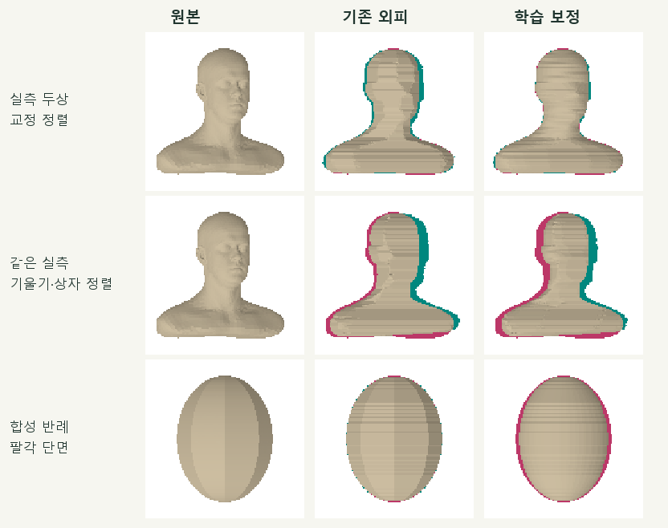

입력에 쓰지 않은 방향의 윤곽
동일한 128×128 검증 카메라로 원본과 두 메시를 그렸습니다. 기존 외피 → 44차 보정 순입니다. 윤곽 거리는 작을수록, 교집합/합집합 비율은 클수록 원본에 가깝습니다.
실측 모델에는 목과 어깨가 있습니다. 상단 거리는 전체 대조가 끝난 후 머리 쪽의 화소를 따로 확인하기 위해 추가했습니다. 화면의 위에서 69개 행에 있는 실제 외곽점만 골라 상대 전체 외곽까지 거리를 재며, 잘린 단면의 가로선은 더하지 않습니다.

보류 시점 좌우 23°·상하 0°. 청록은 원본 밖으로 나온 화소, 자주는 원본에서 빠진 화소입니다. 세 번째 행에서는 학습 보정이 실제 모서리를 깎았습니다.
부위·각도와 무관하게 적용하면 악화되는 반례가 있어 작업대는 기존 외피로 시작합니다. 검증 입력은 모델 렌더입니다. 실사 사진 사용자 승인 예제는 0개입니다.
입력 방향과 보류 방향별 원자료 · 재현용 학습 코드 · 독립 평가 코드 · 원고 데이터
상세 원고
사진 입력은 정면, 앞 사선, 측면, 뒤 사선, 뒷면의 높이별 왼쪽·오른쪽 끝이다. 정사영에서 뒷면의 윤곽은 정면을 뒤집은 것과 같아 수평 단면을 둘러싼 독립 경계 방향은 여덟 개다. 기존 엔진은 이 경계가 허용하는 평면들을 잘라 67개 높이 띠를 만든다. 둥근 볼에서도 이웃 경계의 교차점은 가운데 방향으로 튀어 나올 수 있다. 곡률·폭이 다른 합성 머리 96개를 시드 441031에서 만들고 머리마다 24개 높이를 뽑았다. 여덟 방향과 그 사이의 세 위치를 관찰해 55,296개 표본을 얻었다. 설명변수는 좌우 경계 주변의 지지거리 두 번째 차분 네 개와 양쪽 곡률량의 작은 값이다. 입력 끝은 화소 격자로 양자화하고, 각진 교차점과 연속 단면의 가운데 방향 거리 차이를 정답으로 주었다. 정규방정식의 대각에 0.01을 더한 릿지 회귀로 15개 계수를 구했다.
학습을 끝낸 뒤, 한쪽 턱 치우침·옆 돌출·평평한 뒤통수가 있는 별도 생성식의 여덟 두상을 꺼냈다. 동일 카메라에서 입력에 쓰지 않은 여섯 방향씩 총 48개를 렌더했다. 기준과 보정 메시를 같은 실측 원본 또는 합성 원본과 비교했다. 각 경계 화소에서 상대 경계까지의 가장 가까운 거리를 양방향으로 평균했다. 평균 오차는 1.231에서 0.759픽셀로 줄었고 교집합/합집합 비율은 94.27%에서 96.59%로 올랐다. 개별 영상은 48개 중 24개만 좋아졌다. Lee Perry-Smith 실측 메시 한 개는 학습과 가중치 산출에서 완전히 제외했다. 입력 카메라를 알 때 여섯 보류 시점의 오차가 모두 감소했고 평균 교집합/합집합은 93.38%에서 96.74%로 올랐다. 이 실측 모델에는 목과 어깨가 들어 있다. 전체 비교를 끝낸 후 128행 중 위쪽 69행의 실제 경계만 따로 재니 머리 쪽 보류 오차도 1.200에서 0.495픽셀로 줄었다. 이 고정창은 해부학적 머리 분할에 해당하지 않는다. 입력 방향 다섯 개 자체에서는 윤곽 거리가 0.235에서 0.245픽셀로 소폭 늘었다.
같은 실측을 -5°, +6°, -3°, +5°, 0°로 각각 기울이고 배율도 다르게 한 뒤 마스크 상자로 중심과 크기를 추정했다. 이때 보류 윤곽 거리는 2.898에서 3.024픽셀로 악화됐다. 원래 팔각인 합성 단면도 0.233에서 1.559픽셀로 악화됐다. 손으로 입력 중심을 맞추는 기능은 여전히 필요하다. 다섯 장을 채우고 방위가 45° 간격일 때만 학습 보정을 선택할 수 있다. 보정을 풀면 같은 카메라와 조형값의 기존 외피가 돌아온다. 기기 보존판에는 모델 버전을 기록하고 과거 보존판은 당시 방식으로 연다. 얼굴 안쪽 오목한 깊이, 실사 촬영 인물군, 일반 카메라 원근, 상체·하체·전신은 검증 범위 밖이다. 사용자 승인 사례는 0개다. 학습은 배포 전 합성 수치로 끝냈고 작업대는 이 기기에서 고정 계수만 적용한다.
출처와 이용 범위
기존 36차에 귀속 표시된 Lee Perry-Smith / Infinite-Realities의 정규화·단순화 메시에서 검증 영상을 새로 렌더했다. 합성 두상·학습 코드와 측정은 프로젝트에서 작성했다. 논문 도판과 사용자 사진을 옮기지 않았다.
Laurentini · 실루엣으로 얻는 외피 · Hoerl·Kennard · 릿지 회귀 원 논문 · Lee Perry-Smith · 원본 실측·기여자 · CC BY 3.0 · 실측 모델 이용 허락